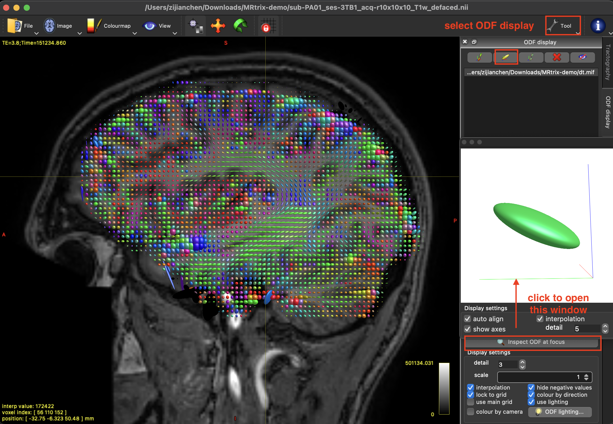
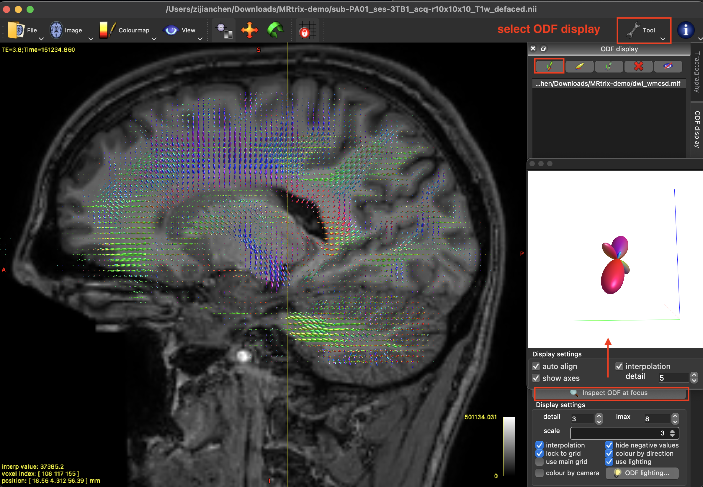
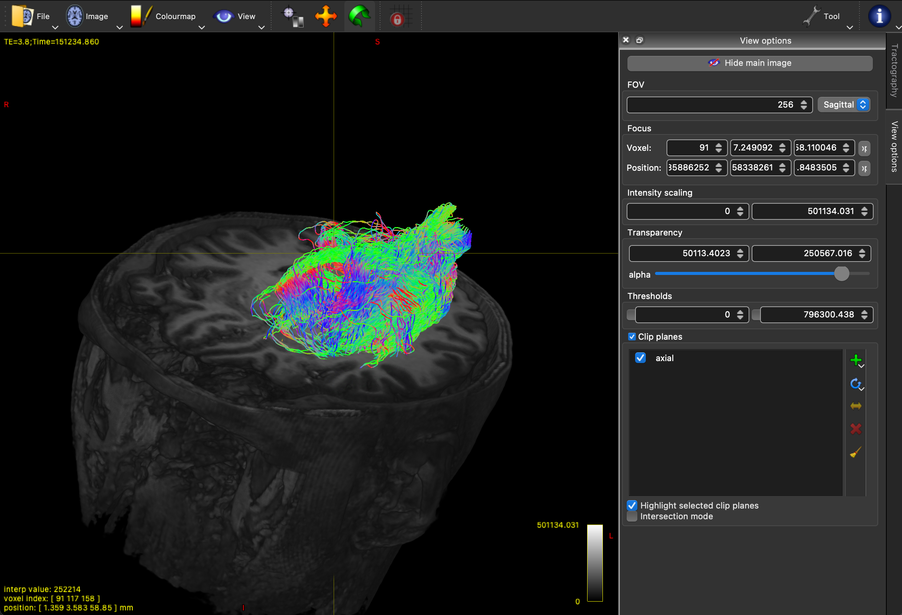
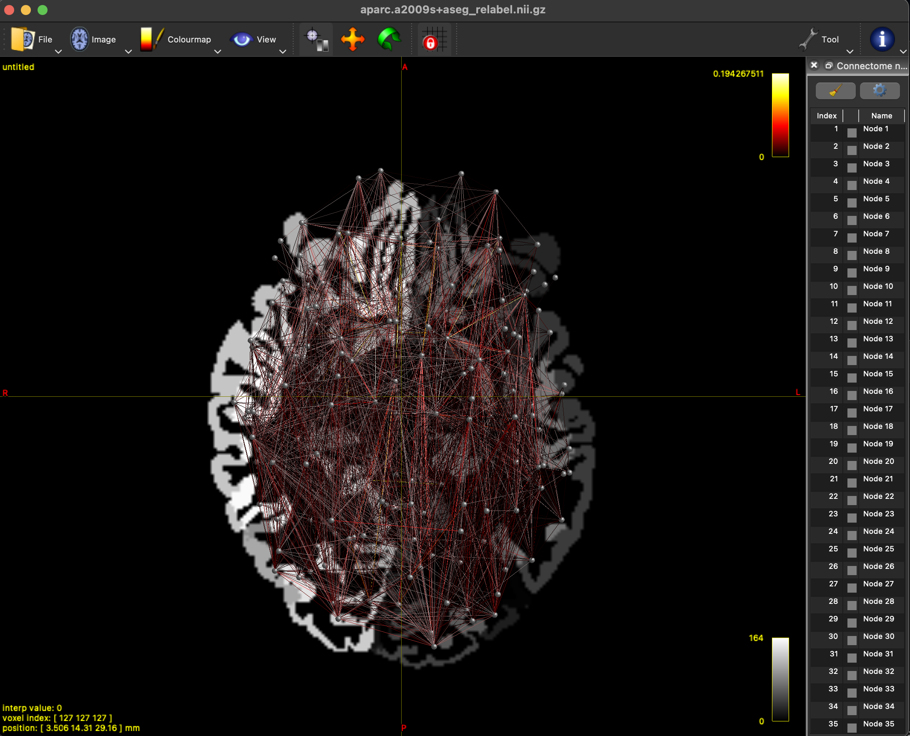

A Quick Guide to MRtrix
Installation (on MacOS)
Dependencies
FSL: Download fslinstaller.py and then run the following code in terminal
cs ~/Downloads python fslinstaller.py
FreeSurfer: see this page
MRtrix
For MacOS, run the following codes to install and build (see this page).
sudo bash -c "$(curl -fsSL https://raw.githubusercontent.com/MRtrix3/macos-installer/master/install)"
The files will be installed in /usr/local/mrtrix3 by default, but you can call all these functions globally (in any other directories).
To upgrade, simply run the above codes again.
Loading and Viewing data
To view images, use
mrview [file path]
to open the GUI, or to start it from Launchpad (or Application).
Preprocessing
Data format Conversion
We need to convert the DWI data into mif format (output file: dwi.mif).
For DICOM files, use
mrconvert [dicom file] dwi.mif
For nii(nifti) files, they are usually with bval/bvec/json files, documenting the b-values, gradient directions and phase-encoding direction, respectively. We need to pack them into one mif file:
mrconvert -fslgrad [bvec file] [bval file] [json file] dwi.mif
To combine files with different gradient from the same subject (e.g., b=1000 and b=2000), do the previous steps for each file and use:
mrcat [b1000 file] [b2000 file] dwi.mif
Denosing and corrections
Before starting, we need to create a mask to restrict the range (area) of image analysis to brain voxels only (output file: pmask.mif):
dwi2mask dwi.mif pmask.mif
Denoising (output file: denoise.mif)
dwidenoise dwi.mif denoise.mif -mask pmask.mif
Removing Gibbs artifacts (output file: degibbs.mif)
mrdegibbs denoise.mif degibbs.mif
For epi correction, we may need two opposite direction (AP-PA) to neutralize the effect. We first create the pair from b0 images (output file: b0_pair.mif). Here order matters: MRtrix expects the first image to be the b0 in phase-encoding direction, and the second in the reversed direction.
dwiextract [AP file] b0_AP.mif -bzero -force dwiextract [PA file] b0_PA.mif -bzero -force mrcat b0_AP.mif b0_PA.mif b0_pair.mif -force
It is possible that the AP or PA mif file contains more than 1 b0 image. We can do either of the following
# option 1: select only one of them dwiextract [PA file] - -bzero | mrconvert - -coord 3 0 b0_PA.mif -force # option 2: take the mean dwiextract [PA file] - -bzero | mrmath – mean b0_PA.mif –axis 3
Then, the epi correction, together with b0-field inhomogeneity correction and Eddy-current and movement distortion correction can be done altogether by the following codes where FSL is needed (output file: correction.mif). This step could take 1-1.5 hours.
dwifslpreproc degibbs.mif correction.mif -pe_dir PA -rpe_pair -se_epi b0_pair.mif -eddy_options "--data_is_shelled --slm=linear --niter=5" -force
For bias field correction (Global intensity normalization), run either of the following code (output file: biascorr.mif). This step is meant to improve brain mask estimation, but could potentially deteriorate the estimation if no strong bias fields are present (check your biasfield.mif output!).
# option 1 dwibiascorrect fsl correction.mif biascorr.mif -bias biasfield.mif # option 2 dwibiascorrect ants correction.mif biascorr.mif -bias biasfield.mif
The final step is to register DWI to T1WI. To do this, we first take the average of all b0 images since they are more “structurally” different than b1000 (or other) images (output file: b0.nii).
dwiextract biascorr.mif -bzero - | mrmath -axis 3 - mean b0.nii -force
Since the images (diffusion, T1W) are from the same subject, we just use linear registration (output file: registered.mif).
flirt -dof 6 -cost normmi -ref [T1WI file] -in b0.nii -omat T_fsl.txt transformconvert T_fsl.txt b0.nii [T1WI file] flirt_import T_DWItoT1.txt mrtransform -linear T_DWItoT1.txt biascorr.mif registered.mif
Up to this step, we have finished almost all necessary steps for preprocessing. We can update the mask by the same code provided above. Here we can augment the mask a bit (output file: dwi_mask.mif).
dwi2mask registered.mif - | maskfilter - dilate dwi_mask.mif -npass 3 -force
Parcellation and segmentation
Using the recon-all command from FreeSurfer to obtain parcellations. This step will create a new sub-folder with the name you specify in the bracket (say, “subj”).
recon-all -i [T1WI file] -subjid [subfolder name] -sd . -all
Further, we use 5ttgen to segment the parcellation image (any image containing ‘aseg’ in its name) into five tissue catagories (1=GM; 2=Subcortical GM; 3=WM; 4=CSF; 5=Pathological tissue) (output file: 5ttseg.mif)
mrconvert subj/mri/aparc.a2009s+aseg.mgz aparc.a2009s+aseg.nii.gz 5ttgen freesurfer aparc.a2009s+aseg.nii.gz 5ttseg.mif -force
The GM/WM interface (where tracts start and end) can be computed by (output file: 5tt_gmwmi.mif)
5tt2gmwmi 5ttseg.mif 5tt_gmwmi.mif -force
Tractography
Diffusion tensor and CSD
Diffusion tensor
Creating diffusion tensor (output file: dt.mif):
dwi2tensor -mask dwi_mask.mif registered.mif dt.mif -force
Based on the tensors created, we can compute some metrics (functional anisotropy: -fa; mean diffusivity: -adc; axial diffusivity: -ad; radial diffusivity: -rd). (output file: dt_fa.mif)
tensor2metric dt.mif -fa dt_fa.mif -force
To view the generated tensor through the mrview GUI, open T1WI first, and then select Tool>>ODF display>>open tensor image. The tensor at each voxel is described by a ellipsoid (characterized by 6 values).
|  |
Since the voxel size is far greater then the fiber radius, these tensors are imprecise in describing the real tracts of the fibers. It is more recommended to use the CSD algorithm as follows.
Constrained spherical deconvolution (CSD)
Step 1: Compute response functions for white matter, gray matter and CSF (output files: ms_5tt_wm.txt, ms_5tt_gm.txt, ms_5tt_csf.txt):
dwi2response msmt_5tt registered.mif 5ttseg.mif ms_5tt_wm.txt ms_5tt_gm.txt ms_5tt_csf.txt -voxels ms_5tt_voxels.mif
Step 2: Compute fiber orientation distribution (output files: dwi_wmcsd.mif, dwi_gmcsd.mif, dwi_csfCsd.mif):
dwi2fod msmt_csd registered.mif ms_5tt_wm.txt dwi_wmcsd.mif ms_5tt_gm.txt dwi_gmcsd.mif ms_5tt_csf.txt dwi_csfCsd.mif
To view the generated FOD through the mrview GUI, open T1WI first, and then select Tool>>ODF display>>open SH image.
|  |
Generating tracts
Creating ROI (output file: dwi_wmMask.mif)
# option 1: whole brain (thresholded by FA) mrthreshold -abs 0.2 dt_fa.mif - | mrcalc - dwi_mask.mif -mult dwi_wmMask.mif -force # option 2: specific regions (from thalamus to cuneus) mri_extract_label -dilate 1 aparc.a2009s+aseg.nii.gz 10 lh_thalamus.nii.gz mri_extract_label -dilate 1 aparc.a2009s+aseg.nii.gz 11111 lh_cuneus.nii.gz
Fiber tracking in the whole brain:
tckgen -algo iFOD2 -act 5ttseg.mif \
-backtrack -crop_at_gmwmi -cutoff 0.05 -angle 45 -minlength 20 -maxlength 200 \
-seed_image dwi_wmMask.mif -select 200k \
dwi_wmCsd.mif fibs_200k_angle45_maxlen200_act.tck
 |
Fiber tracking between specific regions: The only difference is to set seed image as the starting region and require it to include your target region. Here we also ask for uni-directional tracking.
tckgen -algo iFOD2 -act 5ttseg.mif \
-backtrack -crop_at_gmwmi -cutoff 0.05 -angle 45 -minlength 20 -maxlength 200 \
-seed_image lh_thalamus.nii.gz -include lh_cuneus.nii.gz -seed_unidirectional -stop \
dwi_wmCsd.mif fibs_OR.tck
|  |
Connectome
We need to re-label the freesurfer output regions (make sure you have access) (output file: aparc.a2009s+aseg_relabel.nii.gz):
labelconvert aparc.a2009s+aseg.nii.gz /Applications/freesurfer/7.3.2/FreeSurferColorLUT.txt \
/usr/local/mrtrix3/share/mrtrix3/labelconvert/fs_a2009s.txt \
aparc.a2009s+aseg_relabel.nii.gz -force
Generating connectome using (normalized) number of fibers (output file: connectome_a2009s.csv):
tck2connectome -symmetric -zero_diagonal -scale_invnodevol \
fibs_200k_angle45_maxlen200_act.tck aparc.a2009s+aseg_relabel.nii.gz connectome_a2009s.csv \
-out_assignment assignments_a2009s.csv -force
Generating connectome using mean FA (output file: connectome_fa.csv)::
# Step 1: generate mean FA
tcksample fibs_200k_angle45_maxlen200_act.tck dt_fa.mif tck_meanFA.txt -stat_tck mean -force
# Step 2:
tck2connectome -symmetric -zero_diagonal -scale_invnodevol \
fibs_200k_angle45_maxlen200_act.tck aparc.a2009s+aseg_relabel.nii.gz connectome_fa.csv \
-scale_file tck_meanFA.txt -stat_edge mean -force
To view it in mrview, use
mrview aparc.a2009s+aseg_relabel.nii.gz -connectome.init \
aparc.a2009s+aseg_relabel.nii.gz -connectome.load connectome_a2009s.csv
|  |